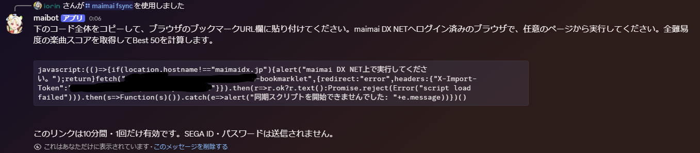
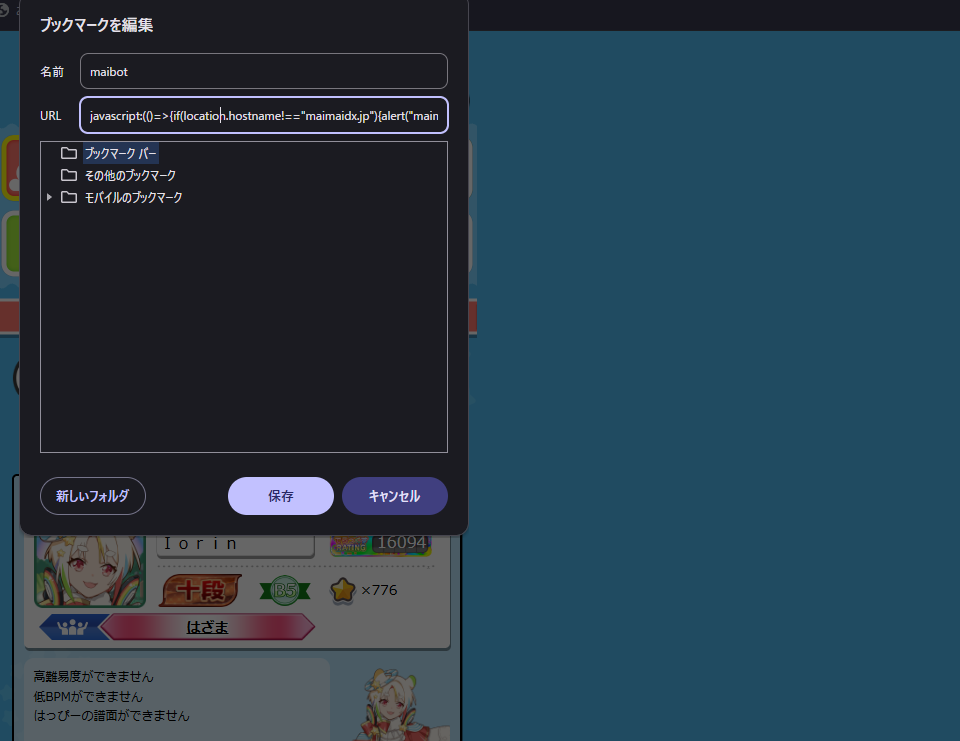
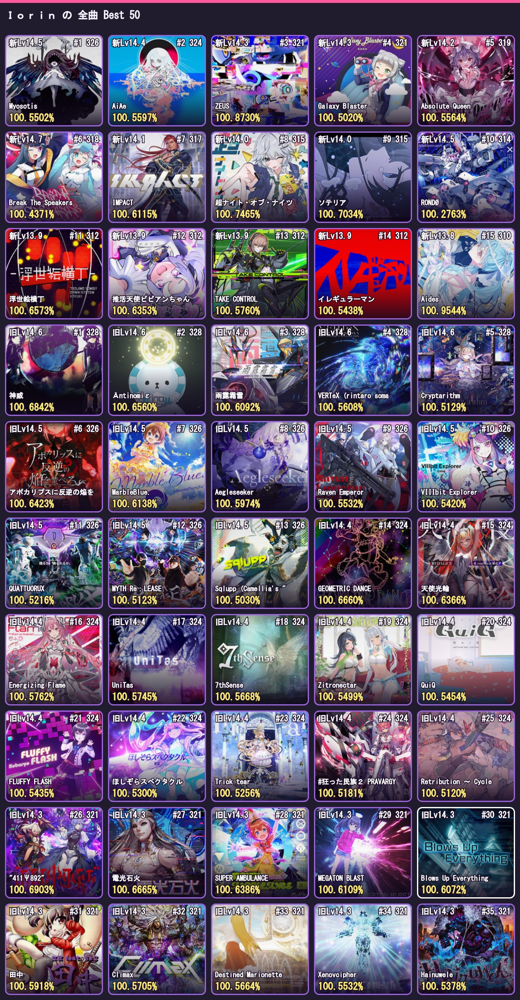

/maimai best [kind]定数・単曲レート・達成率つきでBest枠を表示します。
MAIMAI DX NET × DISCORD
Best 50、次に伸ばす候補曲、DXスコアをDiscordで確認できる非公式Botです。
使い始めるGET STARTED
無料コースの場合は /maimai fsync、Standardコースの場合は /maimai sync を使います。
無料コースは /maimai fsync、Standardコースは /maimai sync を実行します。返信にあるコード全体をコピーしてください。

ブラウザで新しいブックマークを作り、URL欄にコピーしたコードを貼り付けて保存します。名前は任意です。

javascript: になっていることを確認します。maimai DX NETへログインし、作成したブックマークを実行します。無料コースは任意ページ、Standardコースは「でらっくすRating」ページで実行してください。

/maimai image で、ジャケット付きBest 50を1枚の画像で確認できます。SEGA ID・パスワード・CookieはBotへ送信されません。
COMMANDS
/maimai best [kind]定数・単曲レート・達成率つきでBest枠を表示します。
/maimai image [kind]ジャケット付きのBest 50画像を表示します。
/maimai candidate [kind] [count]次ランク到達でBestレートが伸びる候補譜面を探します。
/maimai dxscore <level> [count]指定レベルのDXスコア率を高い順で表示します。
/maimai dxstar <level> <star> [count]指定したDX☆までに必要なスコアが少ない順で表示します。
/maimai newconstant [count] [image]新曲（最新2バージョン）のDX/STD譜面を、譜面定数が高い順に表示します。未プレイは -% です。
/maimai plate <version> <kind> [count] [image]指定プレートの取得に不足している譜面を定数順に表示します。version は候補を入力して絞り込み、kind は神・極・将・舞舞です。
/maimai level <level> <kind> [count] [image]指定レベルの未AP+/AP/SSS+/SSS/SS+/SS/S+/S/FC+/FC/FDXを、達成率が高い順に表示します。
count / image:truecount は既定30件・最大50件です。対応コマンドで image:true を指定すると、ジャケット付きのカード画像を1枚で出力できます。
FAQ
/maimai image がおすすめです。Best 50をジャケット付きの1枚画像で確認できます。
kind に「新曲」「旧曲」「全曲」を指定できます。省略時は全曲です。
できます。☆6は99%以上として計算されます。/maimai dxstar level:14 star:6 のように指定してください。
/maimai plate version:熊 kind:神 のように、バージョンと目標を指定します。必要な譜面は定数が高い順に表示され、image:true でジャケット画像にもできます。
/maimai level level:14+ kind:AP のように指定します。AP・FC・FDX系はコンボ／シンク状況、ランク系は現在のランクも併せて確認できます。
/maimai newconstant を使ってください。未プレイは -% として表示されます。全譜面の反映には無料コース向けの /maimai fsync が便利です。
ジャケット配信元への一時的な接続失敗時は、ジャケットなしで出力されます。少し時間をおいてもう一度画像出力してください。